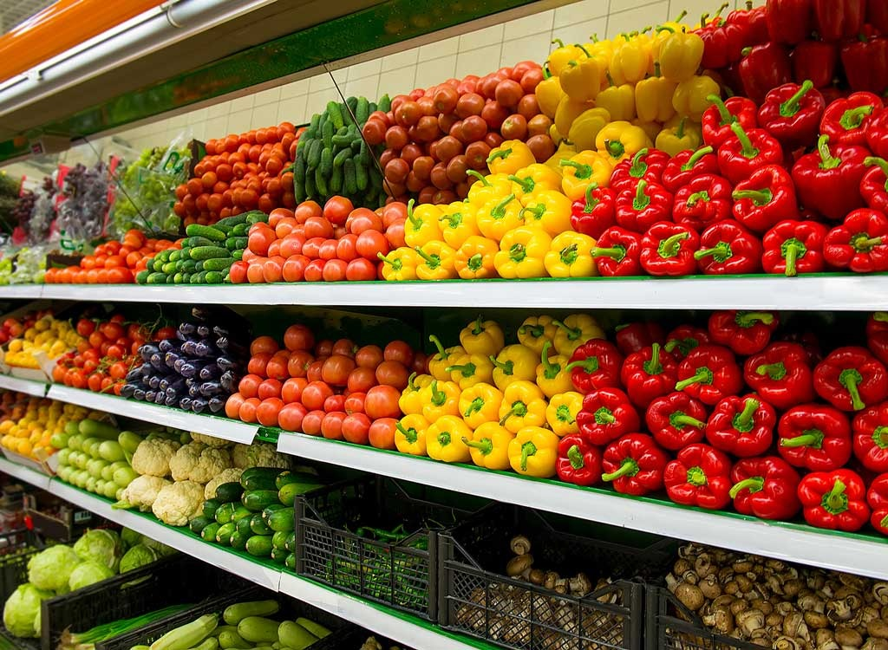

About Us
We are India’s largest low price online supermarket in the grocery space. The company uses its in-house technology platform to manage a network of over 5,000 partner stores that enable the company to run a fast and lean supply chain – from manufacturers straight to customers in 27+ cities namely Agra, Ahmedabad, Aligarh, Allahabad, Asansol, Bengaluru, Bhiwadi, Chandigarh, Chennai, Delhi, Durgapur, Faridabad, Guwahati, Hapur, HR-NCR, Hyderabad, Indore, Jaipur, Kanpur, Kolkata, Lucknow, Meerut, Modinagar, Moradabad, Mumbai, Panipat, Pune, Rohtak, Sonipat, UP-NCR, Vadodara, and Zirakpur. We utilize our efficient supply chain to deliver over 25 million products to customers every month. A majority of these products belong to the company’s 8 in house brands namely G Happy Day, G Happy Home, G Mothers choice, G Happy Baby, G Fresh, O’range and budget brands Savemore and Havemore.
It is hereby clarified that The Grocery Store India Private Limited does not have any relation with the mark ‘GROFFR’, which (we are given to understand) is used by Redstone Consultancy Services Pvt Ltd for its real estate services business, which is not related to Grofers India Private Limited in any manner.
Online grocery store in India
Shop on the go and buy groceries, fresh fruits & vegetables, cakes & other bakery items, meats & seafood, cosmetics, mobiles & accessories, electronics and baby care products. We get it all delivered at your doorstep within hours. You not only save time but also money with our best prices and offers. We get savings.
Single app for all your daily needs
Order thousands of products at just a tap; milk, eggs, bread, cooking oil, ghee, atta, rice, fresh fruits & vegetables, spices, chocolates, chips, biscuits, Maggi, cold drinks, shampoos, soaps, body wash, pet food, diapers, electronics, other organic and gourmet products from your neighbourhood stores.
For best of deals order online in cities
Delhi, Gurgaon, Mumbai, Bangalore, Kolkata, Noida, Pune, Ahmedabad, Chennai, Hyderabad, Jaipur, Lucknow, Surat, Chandigarh, Kanpur, Agra, Indore, Nagpur, Ludhiana and Vadodara.